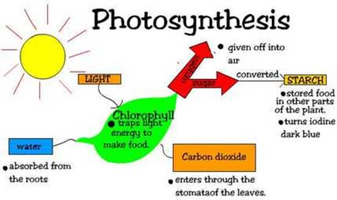
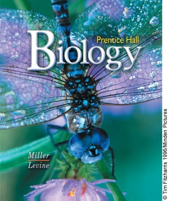

Biology
In the science curriculum, ninth grade students are required, in most areas, to take Earth Science, Physical Science, or Biology. As far as the level of course, Earth Science is usually taken by the basic student, Chemistry may also be available as a 9th grader. The course aims to lead students from their natural interest and previous knowledge of living organisms to more advanced concepts of life. The subject Biology is extremely diverse and this course will cover many, but not all areas of Biology. It is expected that students already understand the importance of reading, writing and studying. Because most students are unfamiliar with Biology and scientific language in general. This class requires a significant amount of study time. The Goal of this class is for students to learn about essential life processes while developing the thinking, reading and writing skills necessary for higher education and the professional job market in the 21st century. There are a wide range of topics that 9th-grade students can study for science. Standard high school courses include biology, physical science, life science, earth science, and physics. Students may also take interest-led courses such as astronomy, botany, geology, marine biology, zoology, or equine science. In addition to covering standard science topics, it’s essential that students gain experience with science practices such as asking questions and forming hypotheses; designing and carrying out experiments; organizing and interpreting data; and evaluating and communicating results. This experience usually results from taking science courses with labs and learning to complete lab reports after each. Most colleges and universities expect high school students to complete two or three lab sciences. Two of the most common science courses for ninth grade students are biology and physical science. Biology is the study of the study of living organisms. Most biology courses begin with a study of the cell, the most basic component of all living things. Students will learn about cell structure, anatomy, taxonomy, genetics, human anatomy, sexual and asexual reproduction, plants, animals, and more. Two years of laboratory science providing fundamental knowledge in at least two of these three fundamental subjects: Biology, Chemistry and Physics. Advanced Laboratory science classes that have Biology, Chemistry or Physics as prerequisites and offer substantial additional material may be used to fulfill this requirement.
 